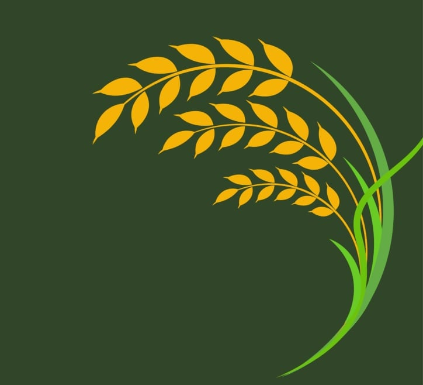

Sustainable agriculture is farming that benefits the environment, is profitable for farmers, and is fair to workers and communities. It involves maintaining healthy soil through crop rotation and cover crops, managing water carefully with drip irrigation and rainwater collection, reducing pollution by using fewer chemical fertilizers and pesticides, promoting biodiversity by growing different crops and integrating livestock, combining crops and livestock to use animal manure as fertilizer and crop leftovers as feed, and reducing the use of non-renewable resources like fossil fuels. These practices aim to create a long-lasting farming system that supports the environment, farmers, and communities.

1. Protects the Environment: It reduces pollution, saves water, and supports diverse ecosystems. Practices like rotating crops and reducing plowing help keep soil healthy and prevent erosion.
2. Economic Benefits: It helps farms be more profitable by using diverse and efficient farming methods. This supports local economies and helps small and medium-sized farms succeed.
3. Social Benefits: It ensures fair treatment for farm workers, supports new farmers, and makes healthy food accessible to everyone. It prioritizes the well-being of communities over large corporations.
4. Food Security: It keeps soil fertile and reduces the need for synthetic inputs, ensuring we can produce enough food for a growing population in the long term.
5. Climate Resilience: Sustainable farming practices help farms withstand extreme weather and other impacts of climate change, ensuring stable food production.By balancing environmental care, economic success, and social fairness, sustainable agriculture aims to create a lasting and healthy farming system